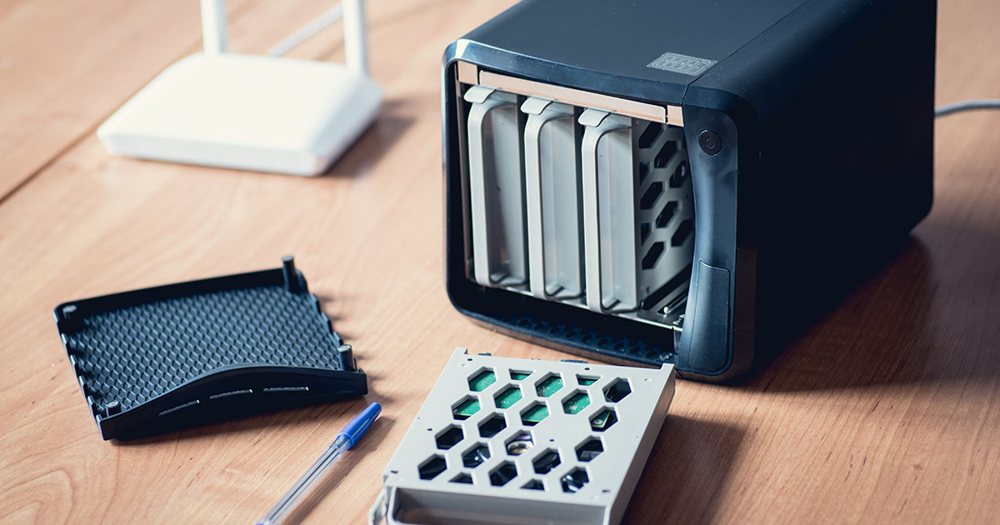

NAS personnel avec Raspberry Pi
Mise en place d'un stockage réseau personnel orienté sauvegarde et accès distant, avec une logique de continuité de service.
- Installation de services de partage et synchronisation de fichiers
- Gestion des droits d'accès et séparation des comptes utilisateurs
- Réflexion sur la sauvegarde régulière et la supervision basique
- Documentation pour reproduire et maintenir l'environnement